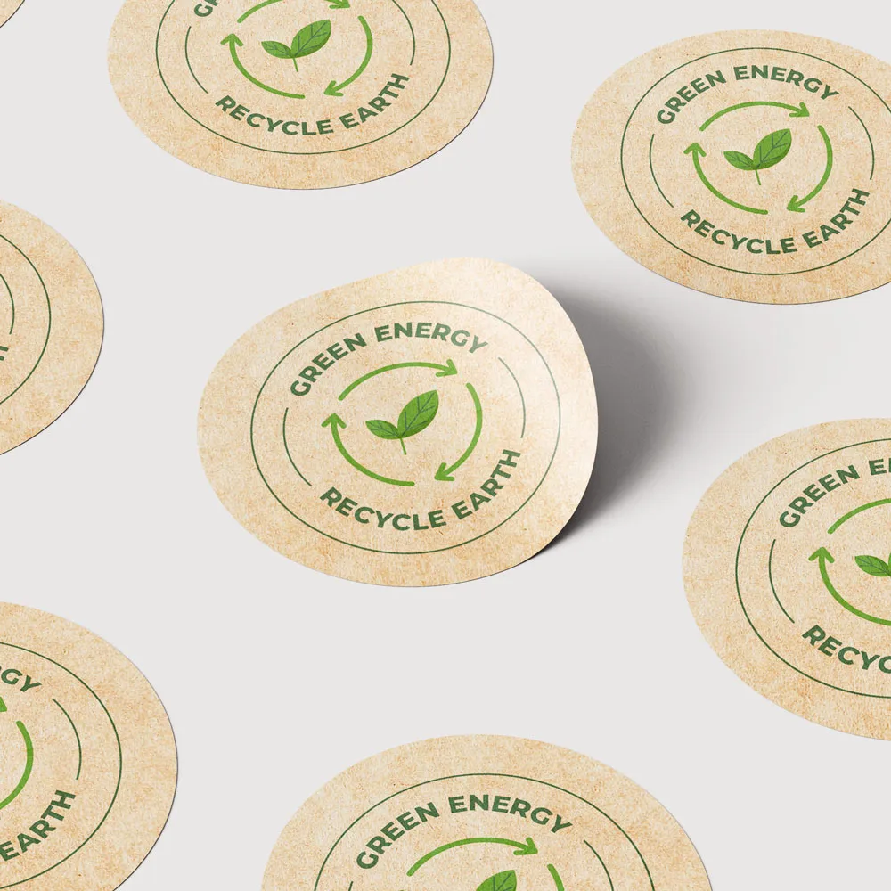
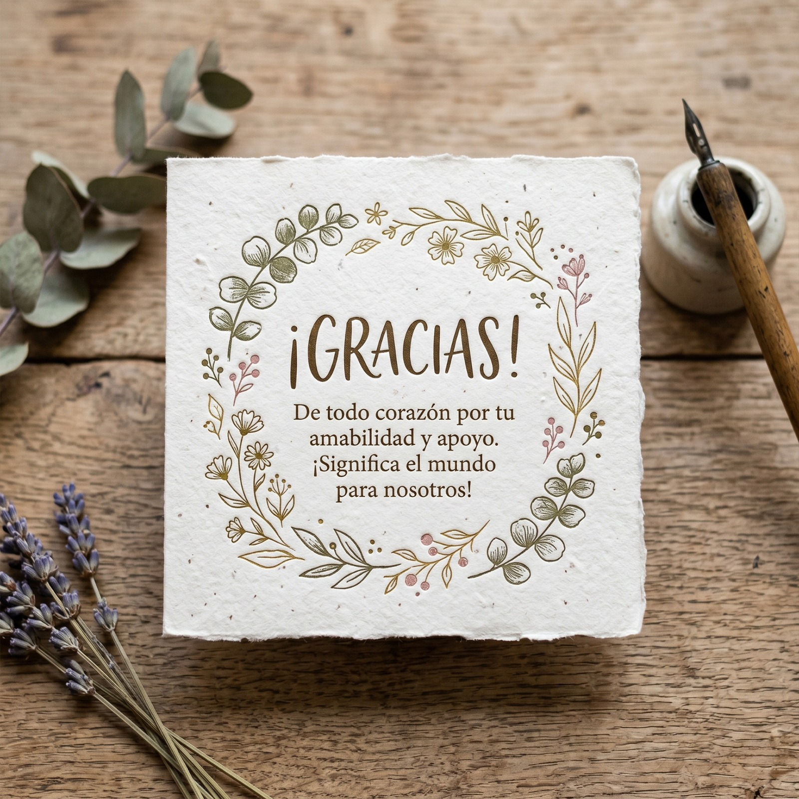
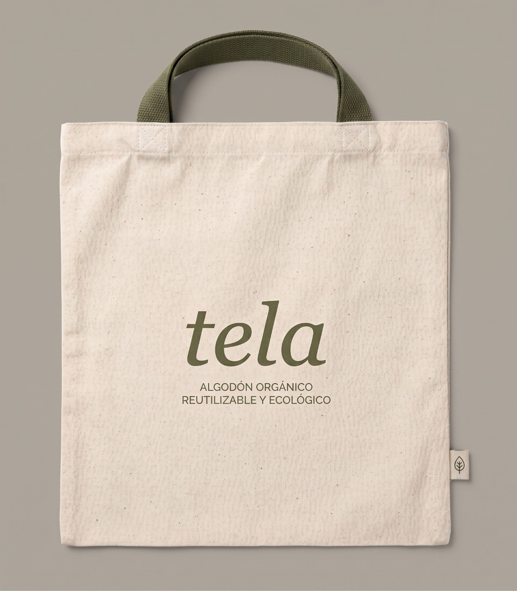
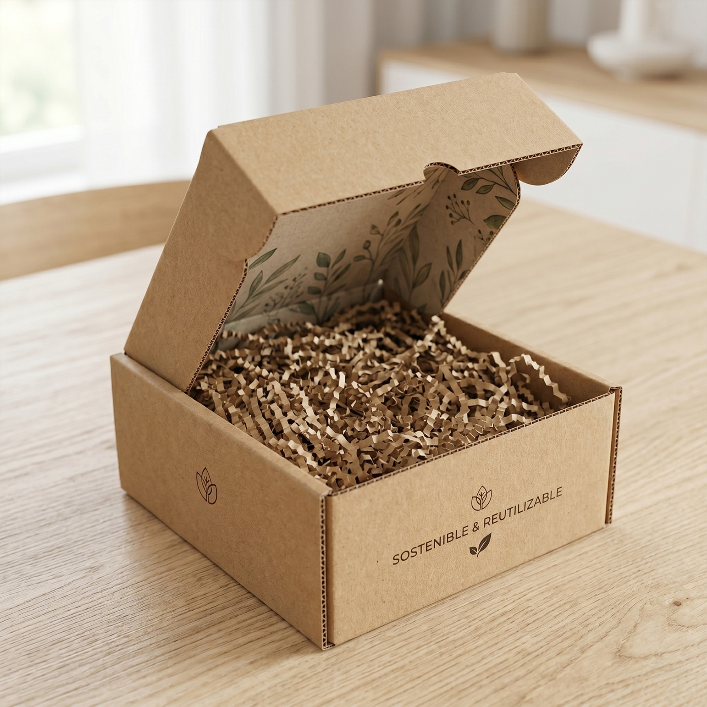
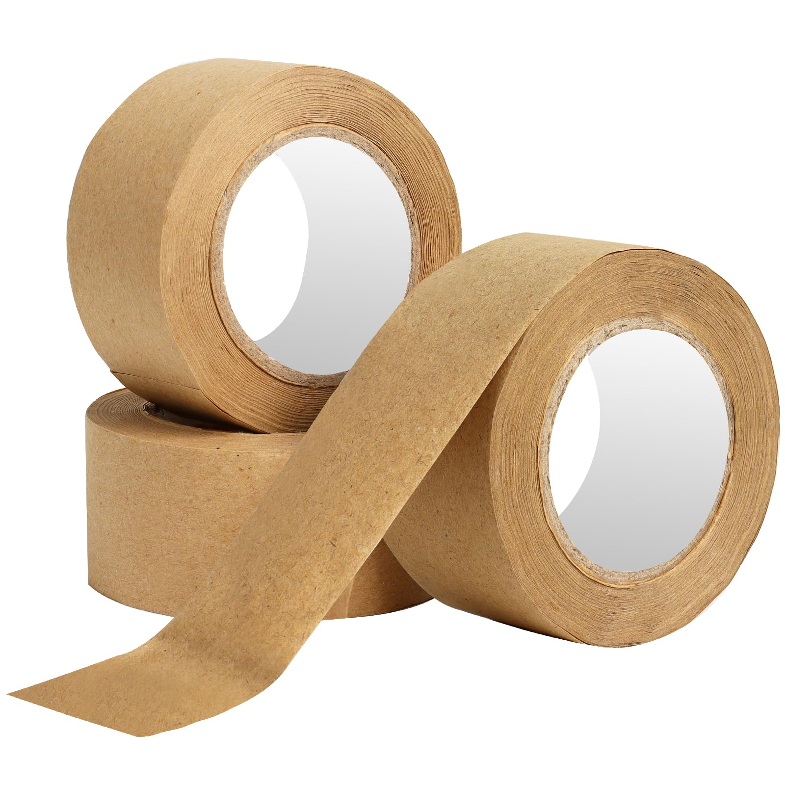
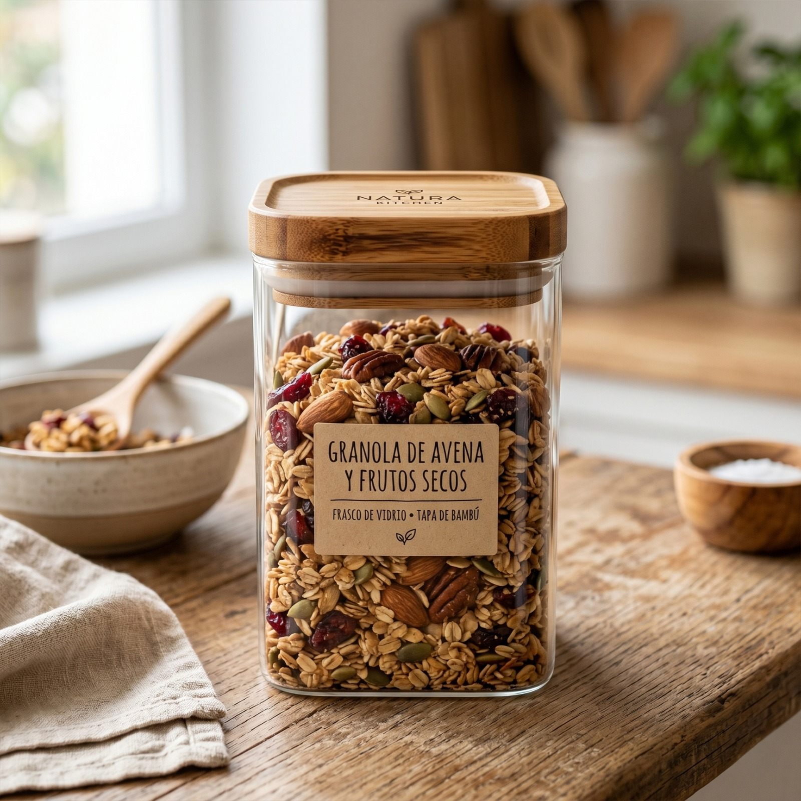
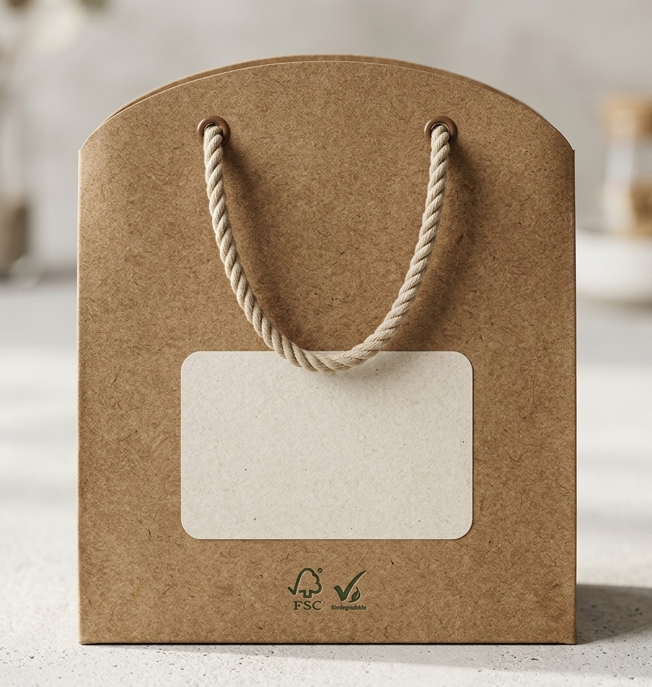
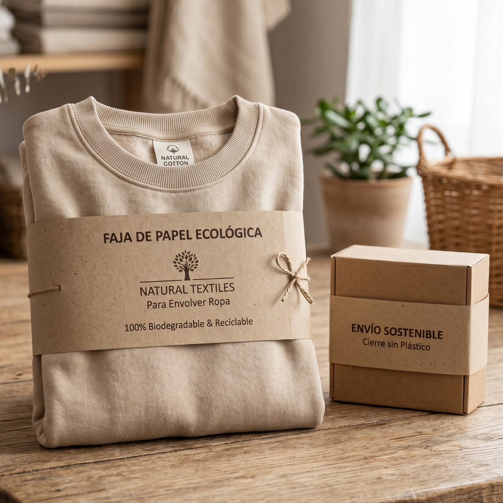
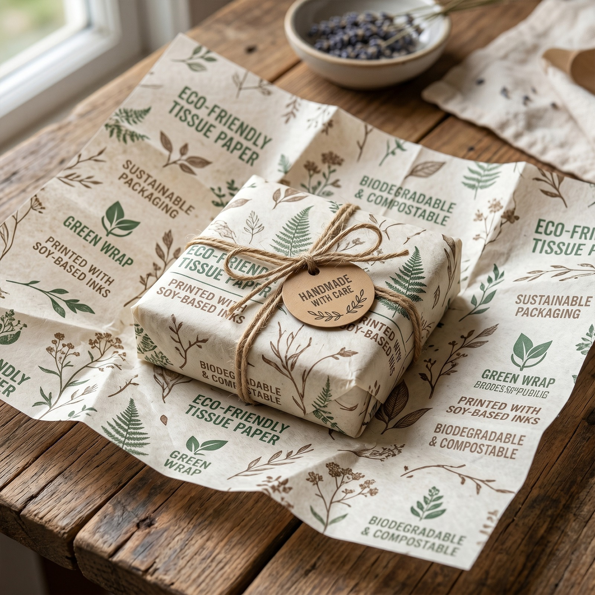
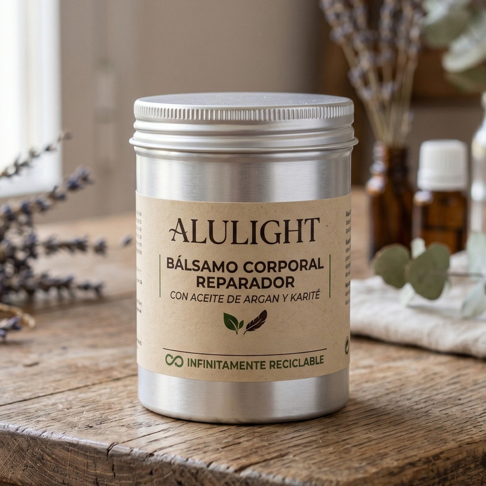

Técnicas de Impresión y Personalización Consciente
Elige el método ideal para plasmar tu identidad reduciendo el impacto ambiental.
Sistemas de Impresión Sostenible
Opciones profesionales para marcas que quieren cuidar cada detalle visual sin perder coherencia ecológica.

01
Impresión con Tintas a Base de Soya o Agua
¿Qué es?
Tintas orgánicas derivadas de fuentes renovables que no liberan compuestos orgánicos volátiles (COV).
Ideal para
Cajas de cartón kraft, bolsas de papel y papel de seda. Permiten que el empaque siga siendo 100% reciclable y compostable.

02
Stamping Ecológico
¿Qué es?
Acabados metalizados mediante películas ultradelgadas que no interfieren en el proceso de reciclaje ni dejan residuos plásticos en el cartón.
Ideal para
Tarjetas de agradecimiento, etiquetas colgantes y empaques de edición limitada que buscan un toque premium sin perder el propósito ecológico.

03
Serigrafía Artesanal con Tintas Al Agua
¿Qué es?
Una técnica clásica que utiliza mallas y tintas libres de solventes químicos o plásticos, sin PVC ni ftalatos.
Ideal para
Bolsas de tela reutilizables en tocuyo o algodón y envases de vidrio o aluminio.
Guía DIY: Crea tu propio sello casero y ecológico
Ideal para emprendimientos que empiezan o buscan un acabado rústico y único.

1
Paso 1
Elige tu base sostenible
Utiliza un borrador escolar de caucho natural o una sección de madera recuperada para tallar tu logotipo o isotipo.

2
Paso 2
Tallado simple
Transfiere tu diseño al borrador y, con la ayuda de una gubia pequeña o un cúter, retira las zonas en blanco dejando el diseño en relieve.

3
Paso 3
El entintado consciente
Usa almohadillas de tinta a base de agua o pigmentos vegetales artesanales. Evita las tintas indelebles con base de solventes químicos fuertes.

4
Paso 4
Estampado único
Presiona firmemente sobre tus cajas o bolsas kraft. Al ser un proceso manual, cada empaque tendrá una textura orgánica y única que refuerza el valor artesanal de tu marca.
Tips de Ecodiseño para optimizar tu Packaging

1
Diseña a una sola tinta
Reduce el consumo de recursos y simplifica el proceso de reciclaje utilizando un solo color. El negro, blanco o tonos tierra sobre kraft lucen increíbles y minimalistas.

2
Aprovecha los espacios en blanco
Deja que la textura natural del papel reciclado o el cartón microcorrugado sea parte de la experiencia visual de tu marca.

3
Evita los laminados plásticos
Si quieres proteger tus etiquetas, opta por acabados con barniz al agua en lugar de plastificados brillantes que impiden el reciclaje del papel.